チュートリアル
選択肢で分岐
画面に選択肢を表示し、プレイヤーに選択させ、その結果によって分岐させてみます。
このような流れになります。
①
床にバナナが落ちている。どうしようか・・・
↓
思い切って食べてみよう
腹を壊すぞ。やめておこう
↓
②
よーし、食べてみよう
もぐもぐ・・・。う、うまい
↓
③
腹を壊すぞ。やめておこう
ぐるるぅ～。は、腹が減ってきた・・・
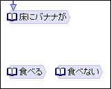
まず、
①②③
をそれぞれシナリオノードとして作成し、文章を入力してください。
結果、チャートは左のようになります。
次に「文字列選択」追加ボタンをクリックしてください。
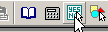
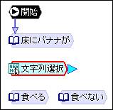
文字列選択ノードが作成されたら、適当な位置まで移動してください。
文字列選択ノードは、画面に選択肢を表示してプレイヤーに選択させるノードです。
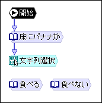
①
の「床にバナナが」から文字列選択ノードにジャンプするように矢印を引いてください。
では、文字列選択ノードをダブルクリックしてください。設定ダイアログが表示されます。
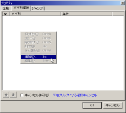
右クリックし、メニューの[追加]ボタンを選択します。
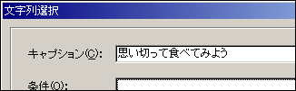
「キャプション」
は選択肢として表示する文字列です。ここでは「思い切って食べてみよう」とします。
「条件」
は、ある条件を満たしている場合にだけこの選択肢を表示するというものです。ここでは使いません。
OKをクリックしてダイアログを閉じます。
同じようにもうひとつの選択肢も作ってください。
最終的には以下のようになります。
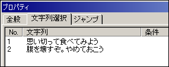
OKをクリックしてダイアログを閉じます。
次に、選択結果によって分岐させるために、条件付きのジャンプを作成します。
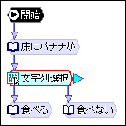
文字列選択ノードから、
②
と
③
のノードそれぞれに矢印を引いてください。
②
に引いた矢印をダブルクリックします。
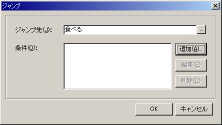
設定ダイアログが表示されます。
「条件」の「追加」ボタンをクリックします。
プレイヤーが選択した番号が「選択番号」という変数に入ります。番号は0から始まるので、条件は以下のようになります。
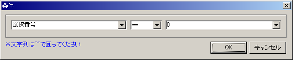
「==」は左辺と右辺が同じという意味です。
変数「選択値」には選択した文字列が入るので、条件を「選択値 == "思い切って食べてみよう"」としても構いません。
OKをクリックしてダイアログを閉じます。
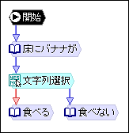
条件が設定されたジャンプは、赤い矢印になります。
ここでは２つの選択肢しかないので、「食べない」へのジャンプの条件は付けなくても構いませんが、付ける場合は「選択番号 == 1」か「選択値 == "腹を壊すぞ。やめておこう"」になります。
ではF5を押して実行してみてください。
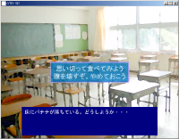
選択肢が表示されたらそれぞれ選択して、正しく進むか確認してください。
←戻る
進む→